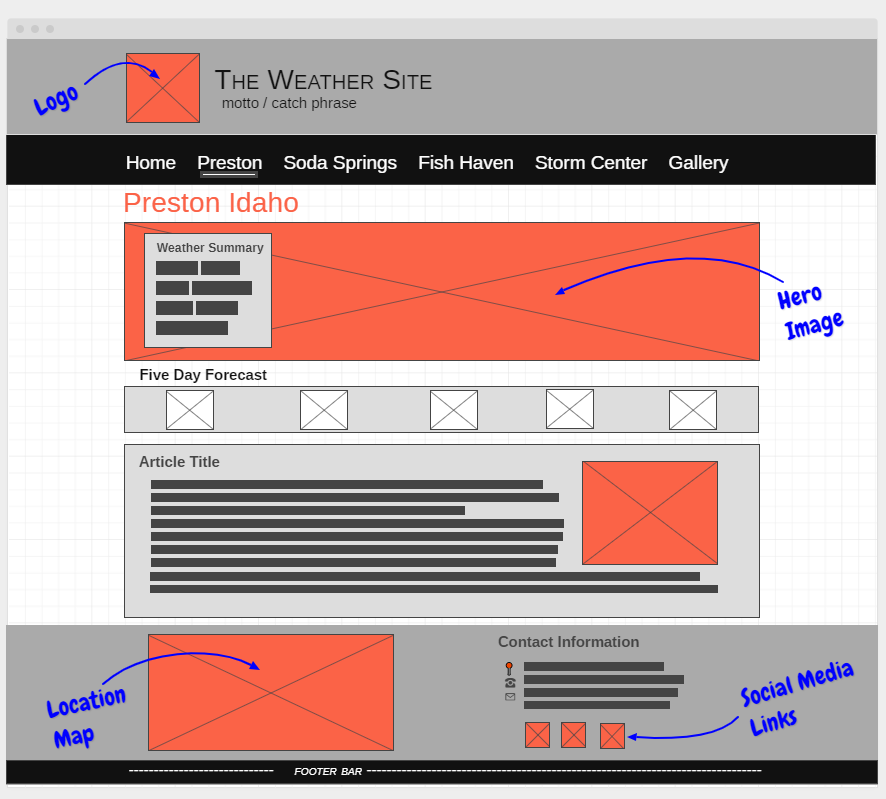
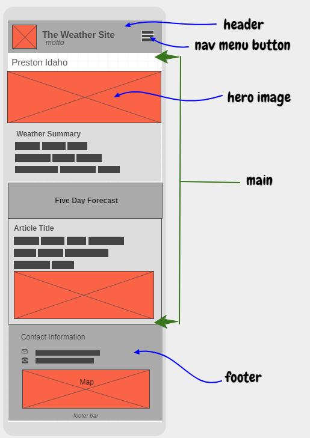

Domain Name: everythingpreston.org
Purpose
Everything Preston provides up to the minute weather information, news and current happenings in Preston. It also serves as a rallying point for anyone living in or visiting Preston for business or fun. Are you considering where in Preston to go skiing? Do you want to know the distance between from Preston central park to the nearest train station? Everything Preston has got you covered.
Website Logo
Style Guide
Navigation
Wireframes
Wireframes are like blueprints for making webpages. They should show the major sections of content that will be on the page and the relative locations of each element. In the wireframe below you can see there will be 6 sections to our page:
 